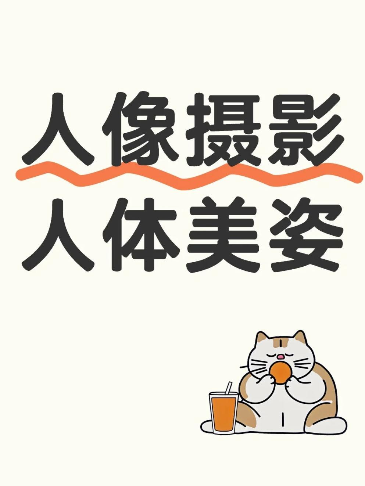

人体美姿

从美术绘画角度掌控人体美姿，需关注人体的点、线、面，将人体分为头、胸、腿三大板块寻找主要的面。
🤳看面的眼光与破面技巧
三大面：可将人体的面看作脸面、胸面、腿面。
破面原因：面完整正对镜头会使美姿呆板僵硬，破面可保证美姿自然度。
破脸面方法：转脸（如四分之三点侧拍）、侧脸、挡脸、局部拍摄、道具挡脸、利用光影明暗交界线等。
破胸面方法：侧身、叉腰、转身、高低肩、提臀等。
破腿面方法：踮脚、脚交叉、脚前后踢、腿交叉等。
破面逻辑：脸面、胸面、腿面不能在同一个平面上，只要有一个面与其他两个不在同一平面即可，同时要注意坐姿时腿面的处理，穿裙子拍坐姿腿一般在侧面。
🤳看线的眼光与破线技巧
三大线：将人体的线分为头线（从鼻子中间分出来的线）、胸线（包括手、马甲线、事业线、腰线等）、腿线。
破线原因：线条控制不好会使美姿僵硬呆板，破线可保证美姿自然度。
破头线方法：歪头（倒头），让头线不与胸线、腿线在同一条直线上。
破胸线方法：转身、叉腰等破坏胸部线条的笔直性。
破腿线方法：脚交叉、踮脚、脚前后伸等。
破线逻辑：头线、胸线、腿线不能在同一条直线上，破线可形成不同形态，如S形线条 。
版权声明：内容均源于网络分享整理，如有侵权请及时联系删除。